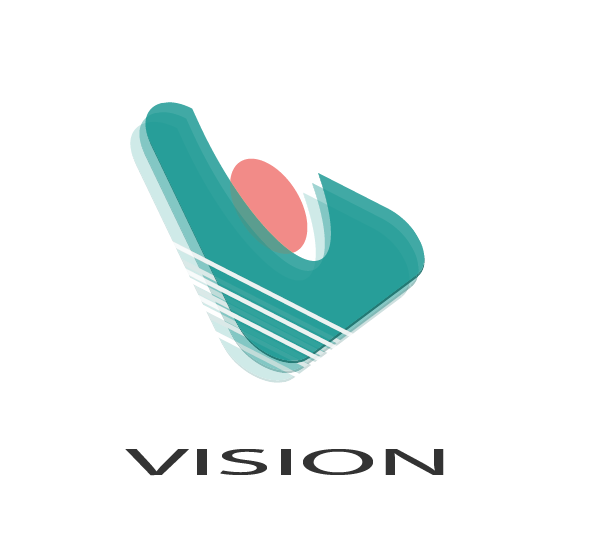
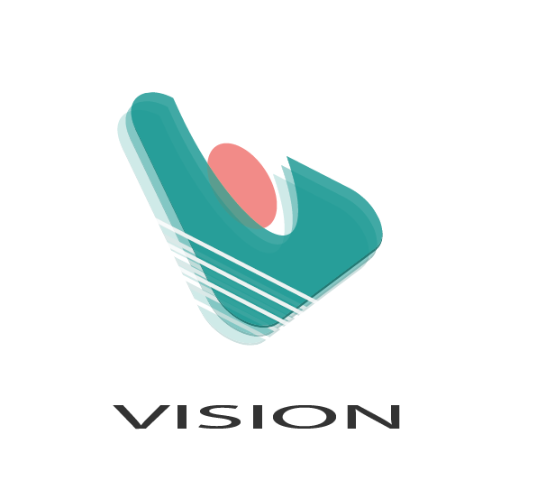

I am a passionate and dedicated Software Engineer with 4 years of Proffesional experience. Skilled in developing innovative Software solutions, my aim is to create impactful applications that solve real-world problems. I enjoy collaborating with cross-functional teams, as well as working independently to tackle complex challenges. With deep understanding of programming languages, frameworks, and best practices, I continuously strive to stay up-to-date with the latest advancement in technology.
My technical skills include the following:

 
